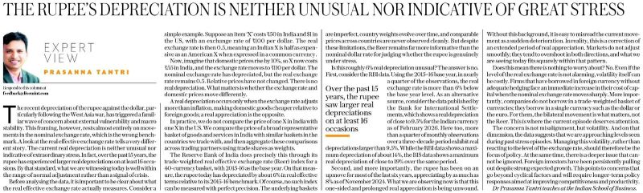
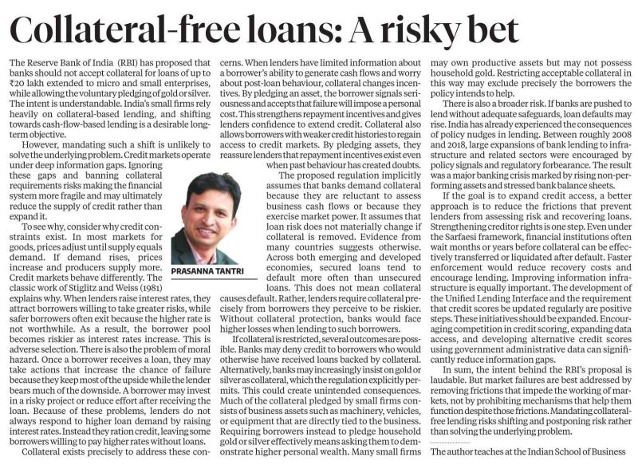
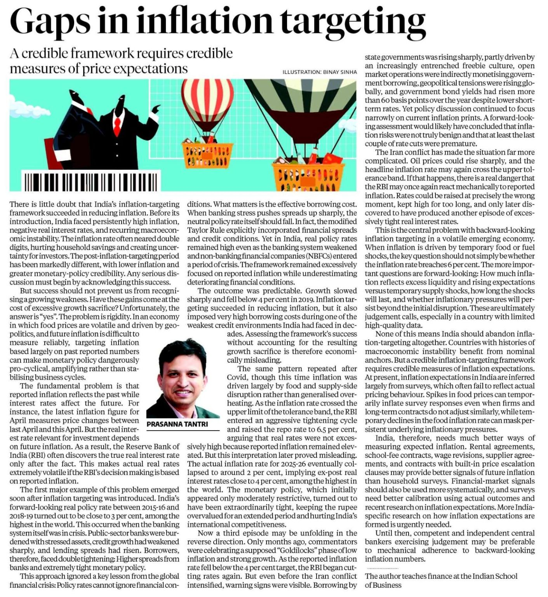

A working plan for Prof. Prasanna Tantri and the CAF team · September 2026
Gen Z Economics — a faceless YouTube channel on economics and finance. Weekly explainers and documentaries, written from primary research, checked against the work you already publish. Built to need your judgement, not your hours.
The two-minute version · read this if you read nothing else
Narrated, motion-led, 12–18 minutes, weekly. Six formats from one topic bank built out of your columns and lectures. You appear when a piece needs it, not because the format does.
A one-page claims sheet per script (~20 min). One studio slot a fortnight for the podcast. A 20-minute topic steer a month. Capped at six hours — we cut the plan before we cut into your week.
A royalty on sponsor and licence income, or a grant that funds the RA. ISB never on a cap table. The CAF line goes on nothing that hasn't passed your review — and off everything, the day you say so.
Drafted next week, before anything carrying the ISB name goes near a media partner. One reply from you settles the time budget. The rest is our job.
Everything after this slide is the same plan in detail. Skim it or don't — the rule on every page is the same: your judgement, not your hours.
01Where we left off
"He has this idea of creating, maybe every fortnight, some sort of discussion on some relevant topics."
CAF, relaying you · 21 July"He really liked your name — Gen Z Economics. Use that as some sort of IP."
CAF, relaying you · on the name"Not a podcast sort of thing — graphics. The content will be real, solid content, but in a more presentable way."
CAF, relaying you · on the format"Maybe we can hire some team — graphic designers — and keep this going."
CAF, relaying you · on the operating ruleFour lines, as they came back from the centre in July. Since then: the Sunday sessions (50–60 people each week), the Prakhar Gupta episode, the Business Standard series, and a media partner in conversation. Every slide that follows keeps to one rule — your judgement, not your hours.
02The gap
Search "India economy explained" and the top results are Economics Explained and Money & Macro — foreign channels explaining India to Indians, and doing it well.
Think School, 5.3M — business and geopolitics case studies, now drifting into 47–82 minute masterclasses. Excellent. Also unparallelisable, because it is a person — and it stops the day he does.
StudyIQ, PW OnlyIAS and the UPSC machine own Indian econ search. They teach what will be asked. Nobody teaches how it works.
The closest thing is Full Disclosure (466K) — 3–4 week cadence, no recurring series. Finfluencers now carry SEBI risk; brand-safe finance inventory barely exists. Formats lag the US by 3–5 years. That window is the opening.
Demand isn't the question. "Entire Indian Economics in 18 Mins" has 2.2M views. A channel called Explained In Minutes has 122K subscribers and two public videos. The appetite is proven; the supply isn't there. "Nobody teaches how it works" is the classroom — and it is the whole thesis.
03What we make
One economic or financial concept per video, built from the mechanism up.
"Why the RBI can't just cut rates" · "Why the rupee keeps falling"
A historical economic event, told with the archive and the data.
"1991: the 90 days India ran out of dollars" · "13 days to save a bank"
Where money, the exchange, the central bank, the rupee and GST actually came from.
"Who made the rupee?" · "A stock exchange under a banyan tree"
The good stories economics is full of — told properly, and sourced.
"$130bn a year comes home" · "The princely state that printed its own rupee"
One company, one deal, one circular — how it actually works, or why it failed.
"₹10 trillion hidden in an RBI circular" · "Why Jet Airways died and IndiGo didn't"
A country, a state or a sector in one sitting — what it makes, and where the money goes.
"How Vietnam became the factory" · "How Japan ran a $2 trillion carry trade"
You and Harsh on what just happened in the Indian economy, and the mechanism behind it. Every two weeks, ISB's studio, the brief in your hands an hour before, 45–60 minutes door to door. A missed fortnight costs nothing — a narrated explainer takes the slot.
A Raghuram Rajan-type conversation, a few times a year at most — and only when the guest is someone you'd want across the table. Guest-led shows don't scale; this is the exception. We handle everything except the chair.
Two registers run across all six: the myth-bust (the consensus check only a research bench can run credibly) and the fast autopsy when a live story deserves one. 12–18 minutes, weekly, then twice weekly. The pillars are a topic map, not six shows — the channel page reads as one library. Parked for later: an IAS-officer series, a decision-maker brief. Neither is in the plan, the budget, or your calendar.
04The shelf
Candle Media, Blackstone-backed, bought Moonbug for ~$3B — 34+ faceless YouTube-native channels. The point for this room is simpler than the valuation: the format works without a face, so it works without your hours. The shelf below is the same format in our niche.
| Channel | What it runs | Face | Cadence | Scale |
|---|---|---|---|---|
| ColdFusion | Narrated business & technology documentary | None | ~2 long-form / mo | ~5.2M |
| Wendover Productions | Mechanism explainers, motion-graphics led | None | 15 days | ~4.9M |
| Economics Explained | Country profiles, rise-and-fall arcs | None | 7 days | ~2.9M |
| PolyMatter | How-it-works, geopolitics of systems | None | 21 days | ~1.9M |
| Money & Macro | Explainers + "economist reacts" peer reviews | Partial | 9 days | ~674K |
| Wall Street Millennial | Current-event autopsies, document-led | None | 2 days | ~367K |
| Think School · India | Business & geopolitics case studies | Face-led | Irregular | ~5.3M |
Counts and cadences pulled 4 Sep 2026. Six of the seven show no face at all. The face-led one is the biggest — and it stops the day its founder does. That is the trap we are designing out: a channel that stops when you are busy is not a channel.
05The time budget
| What we bring you | Cadence | Your time | Prepared by | If you skip it |
|---|---|---|---|---|
| The claims sheetOne page per script: the numbers, the sources, the claims. Tick or strike. Not the script. | Weekly, batched on Friday | ~20 min | The RA drafts it; Harsh formats it | The piece goes out without the CAF line. Nothing waits on you. |
| The podcastWhat just happened in the Indian economy, and the mechanism behind it. | Fortnightly · ISB's studio | 45–60 min | The RA writes the brief; questions agreed in advance; in your hands an hour before | A narrated explainer takes the slot. The slot moves; it never doubles. |
| The topic steerAdd, strike, reorder the bank. | Monthly · 20 min, or on WhatsApp | ~20 min | Harsh brings the list; you strike | The bank already runs on your columns and lectures. |
| Credibility piecesShort on-camera segments for the launch run — "credibility early, then as needed." | 3–4 in the first quarter, inside the same studio slots | 0 extra | Harsh scripts from what you already teach | A narrated version exists for every one. |
| Total | All at ISB, in slots CAF's calendar already holds | ~4–5 hrs / month | Cap: six hours. If we cross it, we cut the plan — not your week. | |
No travel — every recording is at ISB, booked through CAF's calendar at the studio's internal rate. One batched message a week; one studio slot a fortnight. That is the whole footprint, and it does not grow when the channel does.
06What we will never ask
Every operating decision is the operator's. You hear about them in the monthly steer, after the fact — if at all.
Sponsors never meet you unless you want to meet them. The Bureau's asks land on Harsh, not on you.
You will never be sent a thumbnail to approve. Retention is our problem. Correctness is the only thing we bring you.
If a claim fails the sheet, we rewrite and return a fresh sheet. You strike; you never edit.
One batched message a week. Silence never blocks a publish — it removes the CAF line, that's all.
Every recording is in ISB's studio, in a slot CAF's calendar already holds. If you are travelling, the slot moves.
These go into the CAF MoU as written. If any one of them is broken, you have a reason to step back — no notice, no explanation owed.
07The bench behind the camera



The topic bank already exists — every column is a script waiting to happen
What the centre puts behind the channel — and who carries each piece:
08The operator
You hold the accuracy pass and the topic veto. The RA at CAF does the deep research — he has published columns and scripted the ISB series before. Mohan holds the archive and the calendar. ISB's studio records the fortnightly podcast. Nothing else touches the centre.
Founded Ninety-Eight Entertainment at 20 and bootstrapped it to 18 people across three cities and 57 clients — no outside money. Managed 12 athletes and 500+ influencers, including Ishant Sharma's personal brand and his RuPay × IPL partnership (300M+ impressions). Then PGP '25, and your class. Then built this product solo in five months.
Creator-led ventures fall over when the creator has to run them. Here there is no creator to misplace — the channel is faceless, you review, and the operator operates. If you go quiet for a month, the channel doesn't.
09The channel
10What's protected
11Where the media partner stands
Bureau Media Ventures — Ayush Guha, with Angad — met on the ISB creator panel in July. Their synopsis: "Predominantly faceless. Good edits about economics for the newer generation, mixed with conversations with the professor and industry leaders every once in a while." On the fortnightly podcast: "perfectly fine."
"The channel doesn't just build around him. It's built around Gen Z Economics — and then he's the cherry on top every now and then." Credibility early, then as a piece needs it. That is their ask — and it is exactly the rule on every page of this deck.
What they'd bring: the production bench (motion, edit, thumbnails), ₹1.19 Cr over 18 months — or ~₹85L plus the bench in kind — and a distribution playbook. Monday, with Angad: capacity, guardrails, how we function as partners, and where this sits in their wider Economic Times picture.
What never reaches you: sponsor calls, packaging, the partner's asks. What they never get: editorial control, the CAF licence, or anything carrying the ISB name before the MoU exists. Nothing is signed with them before it is signed with you.
12The audience & the money
Indian finance RPM runs roughly $0.50–$1.60 — five to fifteen per cent of the US. We plan on the low number. The capital is the media partner's problem, not the centre's — no ISB money, and no fundraising asks to you.
The mechanism that changes the number: English-language economics pulls tier-1 traffic. Indian creators with 60%+ US/UK/AU audiences report $4–10 RPM. An Indian story, in English, for a global audience — the audience that currently gets India explained by people who don't live here.
13The production line
| Stage | What happens | Hours | Yours |
|---|---|---|---|
| Research & script | Topic from the bank, primary sources, 2,000–2,700 words. The RA and the editorial lead. The moat. | 12–25 | 0 |
| Review & fact-check | Retention structure and hook (ours); the RA's source pass; your claims sheet — tick or strike | 3–5 | ~0.3 |
| Voice-over | Human narration, on retainer | 3–5 | 0 |
| Motion & edit | Charts, data-viz, archival, sound — the bottleneck and the quality signal | 25–50 | 0 |
| Thumbnail & packaging | 3–5 variants, title testing, publish | 3–6 | 0 |
14Structure
CAF · Indian School of Business
Gen Z Economics — the media SPV
Advisory
Percentages deliberately off this page — set together once the pilot and four weeks of publish data are in. Sequence we're holding to: the CAF MoU is drafted first; nothing carrying the ISB name is signed with the Bureau before it exists.
15Use of funds
| Line | What it buys | 18 mo · ₹L |
|---|---|---|
| Editorial lead | Full-time. Turns the archive into shooting scripts — 2,000–2,700 words, weekly. The moat. | 24 |
| Operator | Harsh, full-time — production, packaging, distribution, sponsors | 18 |
| Voice-over retainer | Human narration, ~₹12K per video across ~115 videos | 14 |
| Motion designer | Full-time. Charts and data-viz — the bottleneck row | 12 |
| Freelance overflow | The second lane when we move to 2×/week | 10 |
| Research associate | The CAF-side RA — sources, data, first drafts, claims sheets. Partly coverable via the ISB Marcom route; paid either way | 9 |
| Editor | From month three — assembly, archival, sound | 8 |
| Tools, stock, archival, data | Motion templates, footage licences, macro data feeds, production AI | 7 |
| Podcast & studio days | Fortnightly studio days at ISB's internal rate — a booking, not a favour — plus guest logistics | 6 |
| Thumbnails & packaging | 3–5 variants per video, title testing | 3.5 |
| Buffer | Because relevance comes in waves | 8 |
| Total | ≈ ₹1.02L blended per video · ~₹85L if the Bureau bench covers motion, edit and thumbnails | 119.5 |
Zero for paid reach, by rule. Built bottom-up from Indian freelance and in-house rates. Your time is not a line item because we are not buying hours — what CAF earns is on the structure slide, and what you hold personally is set with ISB's consent.
16The second rail
The audience this channel builds is unusually dense in people who commission economic work — corporate-affairs heads, strategy officers, mid-market CFOs, industry associations, funds. That is a B2B rail, not merch — and it looks a lot like research the centre already does.
| Product | Shape | Anchor* |
|---|---|---|
| Macro & policy briefing | Monthly retainer, standing call + written note | ₹1–3L / mo |
| Regulatory impact study | 6–8 week project, board-ready | ₹8–25L |
| Economic-impact report | Flagship, for associations and large firms | ₹15–40L |
| Expert engagement | Competition and arbitration economics, per matter | Per mandate |
*Anchors for discussion, nothing more. This is Phase 3, deliberately — it needs the channel's credibility to exist first, it is not in this budget, and it is not on your calendar. If CAF wants any of it, it is CAF's work on CAF's terms. If not, it doesn't happen. It is on this page only so that nothing sits on a page you haven't seen.
17Every scenario
| Horizon | Path | The licence, and your name |
|---|---|---|
| 18–36 months | Sponsors and platform revenue cover the cost base; the back catalogue keeps earning | CAF's royalty keeps paying; the licence renews on CAF's terms |
| 3–5 years | Channel or network acquisition. Established faceless channels trade at roughly 2.5–4× annual revenue; a multi-format library commands a premium | The licence does not transfer without CAF's consent. A buyer gets the library — not the ISB name |
| Strategic | Sale to a platform that wants trusted Indian finance distribution — a Zerodha/Groww-type fintech, a media house, an ed-tech | Same consent right — and the no-advice rule survives any buyer as a condition of the licence |
| Downside | The channel stalls. The library is evergreen and licensable; the format and the topic bank survive | The licence lapses cleanly; published pieces stay as published; your name comes off everything new |
The honest version: Indian faceless-channel exits are still emerging. That is the Bureau's risk to price, not the centre's — CAF is paid in cash from the first rupee of sponsor income and holds the consent right throughout.
18The plan
19Risks
The claims sheet, not the script. The RA's first pass. Batched weekly. And the silence default: no reply in 72 hours means the piece goes out without the CAF line — never with it, and never late.
Two passes before narration, a pinned public correction within 48 hours, the CAF line only on reviewed pieces. No quiet edits, ever.
No investment advice, by rule, for every piece, sponsor and guest. Opinion labelled as yours. Brand-safe by design is the same thing as reputation-safe by design.
The operator's problem, not yours. Four videos banked before launch, a three-video buffer at all times, formats judged in 8-episode windows. The rules are written down because the last attempt died of inconsistency.
Platform risk, for completeness: YouTube's AI-slop crackdown demonetises templated output. Our defence is the product — original scripts, human narration, bespoke charts. The compliance line and the thesis are the same line.
20Next 30 days
Yes, no, or change — to the time budget (§05) and the six promises (§06). That is the only decision we need from you this month. Everything else on this page is ours to carry.
Investment capacity, guardrails, how we function as partners. Nothing carrying the ISB name is on that table. We drop one finished script into their bench the same week — one video, no commitment.
Content licence, royalty, the associate — drafted by us, reviewed by CAF and ISB's legal desk, before anything with the ISB name reaches the Bureau. Mohan's archive seeds the topic bank; the first four claims sheets reach you, batched.
Podcast episode one and two short credibility pieces in the same sitting. Four long-forms banked, the first Shorts cut. Weekly from there — on our calendar, not yours.
The close
"This is a 25-year plan, not a 12-month one."Prof. Tantri · to the cohort
That's the channel. India's economics, explained properly, by nobody in particular — with a research bench nobody else has, a topic bank that already exists in your columns, and an operator who has built the machine before.
An 18-month machine that runs on your judgement, not your hours — so it is still running in year 25.